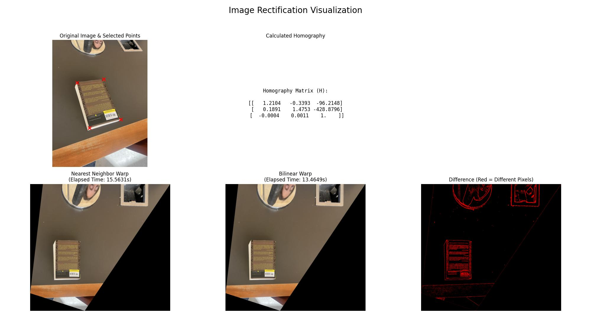

A.1: Shoot and digitize pictures
I took three sets of photos: a view from the Music Library, Wurster stairs, and Wurster Hall.
For each set, I tried to maintain an overlap region, as well as rotate my camera solely about the actual camera lens to prevent a shift in center of projection.
Set 1: Music Library View
Set 2: Wurster Hall
Set 3: Wurster Stairs
A.2: Implement computeH(im1_pts,im2_pts)
Derive Point Correspondence
Begining with the homography equation from lecture, we have:
$$
\begin{bmatrix} x'w \\ y'w \\ w \end{bmatrix} =
\begin{bmatrix} h_{11} & h_{12} & h_{13} \\ h_{21} & h_{22} & h_{23} \\ h_{31} & h_{32} & h_{33} \end{bmatrix}
\begin{bmatrix} x \\ y \\ 1 \end{bmatrix}
$$
$w$ is the homogenous scaling factor.
If we multiply two right side matrices, we get the three equations:
$$
\begin{align*}
x'w &= h_{11}x + h_{12}y + h_{13} \\
y'w &= h_{21}x + h_{22}y + h_{23} \\
w &= h_{31}x + h_{32}y + h_{33}
\end{align*}
$$
We know from lecture that we can set $h_{33} = 1$ to reduce the number of unknowns from 9 to 8, since the homography is defined up to scale. This gives us:
$$
w = h_{31}x + h_{32}y + 1
$$
which we can substitue into the other equations to eliminate $w$:
\begin{align*}
x'(h_{31}x + h_{32}y + 1) &= h_{11}x + h_{12}y + h_{13} \\
y'(h_{31}x + h_{32}y + 1) &= h_{21}x + h_{22}y + h_{23}
\end{align*}
If we isolate $x'$ and $y'$, we directly define the rows of matrix $A$ and vector $b$ for a point correspondence:
\begin{align*}
h_{11}x + h_{12}y + h_{13} - h_{31}x x' - h_{32}y x' &= x' \\
h_{21}x + h_{22}y + h_{23} - h_{31}x y' - h_{32}y y' &= y'
\end{align*}
Creating the homography
The vector of our 8 unknown degrees of freedom is:
$$
h = \begin{bmatrix} h_{11} & h_{12} & h_{13} & h_{21} & h_{22} & h_{23} & h_{31} & h_{32} \end{bmatrix}^T
$$
From above, the system for a single point correspondence is:
$$
\begin{bmatrix}
x & y & 1 & 0 & 0 & 0 & -xx' & -yx' \\
0 & 0 & 0 & x & y & 1 & -xy' & -yy'
\end{bmatrix}
\begin{bmatrix}
h_{11} \\ h_{12} \\ h_{13} \\ h_{21} \\ h_{22} \\ h_{23} \\ h_{31} \\ h_{32}
\end{bmatrix}
=
\begin{bmatrix}
x' \\ y'
\end{bmatrix}
$$
We can then stack these rows in the left and resulting matrices for additional point correspondences. When this uses more than four point correspondences, we can solve the resulting overdetermined system with least squares to find the best fitting homography.
As an example for set 3, I defined 10 point correspondences as such (shown with a line between corresponding point), resulting in the $H$ matrix:
$$
H = \begin{bmatrix} 2.069 & 0.011 & −647.7 \\ 0.361 & 1.717 & −190.3 \\ 0.001 & -0.00002 & 1.0 \end{bmatrix}
$$

A.3: Warp the images
For this section we implemented our two warping functions as:
imwarped_nn = warpImageNearestNeighbor(im,H)
imwarped_bil = warpImageBilinear(im,H)
To prove the validity of the implementations, we can rectify example images.
The below comparisons show the original image, the $H$ matrix, and the result using both functions. Finally, there is a pixel-wise comparison noting any differences. I chose not to crop in the images to show warping around the target.


Interestingly, my bilinear implementation ran faster, despite being more complex. For example, the time is ~6.59s vs ~5.98s between nearest neighbor and bilinear in the second rectification. I believe this could be due to multiple image array accesses which take longer than value calculations on my personal machine. The bilinear warp seems slightly blurrier than the neighrest neighbor, which aligns with the idea of averaging neighbors.
Most of the pixel differences are around changes in edges/features in the image, which the bilinear would blur slightly.
A.4: Blend the Images into a Mosaic
In this section we actually create our mosaics.
I chose the one shot procedure, where, per the spec, I first determined the size of final mosaic and inverse warped (preventing holes) all the images into that size using the homographies computed relative to the center image.
In order to prevent a overlapping seam, I implemented two-band blending. I found the overlapping region of the two images and used the distance transform scipy.ndimage.distance_transform_edt to find the distance of each pixel to the nearest zero pixel. I then binarized this with a threshold of 0.5 to create a hard seam, which I passed into the pyramid blending functions we implemented in project 2. The low frequency portions of the images used a Gaussian blur to softly blend the images together, while the high frequencies used the binary mask to merge. My results are as such, shown with the bilinear warping strategy in the mosaic:
Set 1: Music Library View
Set 2: Wurster Hall

Set 3: Wurster Stairs
To compare the output with and without blending, I also created mosaics using simple overlaying, resulting in a hard seam in the overlapping region.
Part B: Automatic Stitching
The second part of the project was to build a fully automatic pipeline to replace the manual selection of correspondence points. This involved implementing a series of algorithms to detect, describe, and robustly match features between images.
B.1 & B.2: Harris Corners and ANMS
The first step is to automatically find distinctive feature points. We use Harris Corner detection, which identifies points where image intensity changes significantly in multiple directions. However, this initial detection yields thousands of points, many of them clustered together.
To get a smaller and more spatially diverse set of features, we apply Adaptive Non-Maximal Suppression (ANMS). For each corner, ANMS calculates the minimum distance to another corner that is significantly stronger. By selecting the 500 points with the largest suppression radii, we ensure our final feature set is both strong and well-distributed across the image, which is crucial for a stable homography calculation.
B.3: Feature Descriptor Extraction
Once we have our keypoints, we extract a feature descriptor for each one to allow us to compare points between images. We extract a large 40x40 window around each corner candidate, apply a Gaussian blur to make it resistant to noise, and downsample it to a standard 8x8 patch. Finally, we normalize this patch to have a mean of 0 and a standard deviation of 1. This normalization makes the descriptor invariant to changes in brightness and contrast.
B.4: Feature Matching
With descriptors for every point in both images, we can now find matches. We use the ratio test, a robust method proposed by Lowe in the project reference paper to calculate patch similarity. For each descriptor in the first image, we find its two nearest neighbors in the second image. A match is considered reliable only if the distance to the best match ($d_1$) is significantly smaller than the distance to the second-best match ($d_2$). We keep a match if the ratio $d_1/d_2$ is below a certain threshold. As shown in the paper's ROC curve, a threshold around 0.8 provides a good balance, eliminating most false positives while retaining a high number of true positives.
B.5: RANSAC for Robust Homography
Even with the ratio test, the set of matches contains incorrect matches. To compute an accurate homography, we use RANSAC (Random Sample Consensus). RANSAC is an iterative algorithm that finds the best transformation by building a consensus from the data.
In each iteration, it randomly selects a sample of 4 correspondence pairs, computes a candidate homography from them, and then counts how many of the other correspondences are consistent with this $H$ (the "inliers"). After thousands of iterations, the algorithm chooses the homography that had the largest set of inliers. For a final, more accurate result, we re-compute the homography one last time using the total set of inliers. The image below shows an example inlier set found by RANSAC.
Final Automatic Mosaics
Using the homography computed using RANSAC, we can warp and blend the images automatically. Below is a comparison of the manually stitched results and the automatic results for each of the three sets.
Set 1: Music Library View (Manual vs. Auto)
Set 2: Wurster Hall (Manual vs. Auto)
Set 3: Wurster Stairs (Manual vs. Auto)